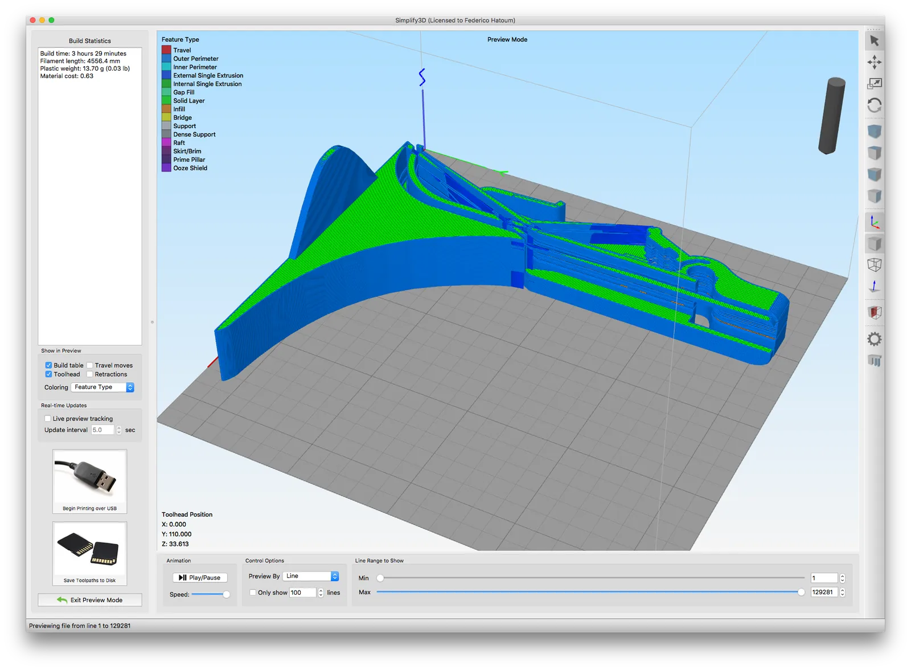
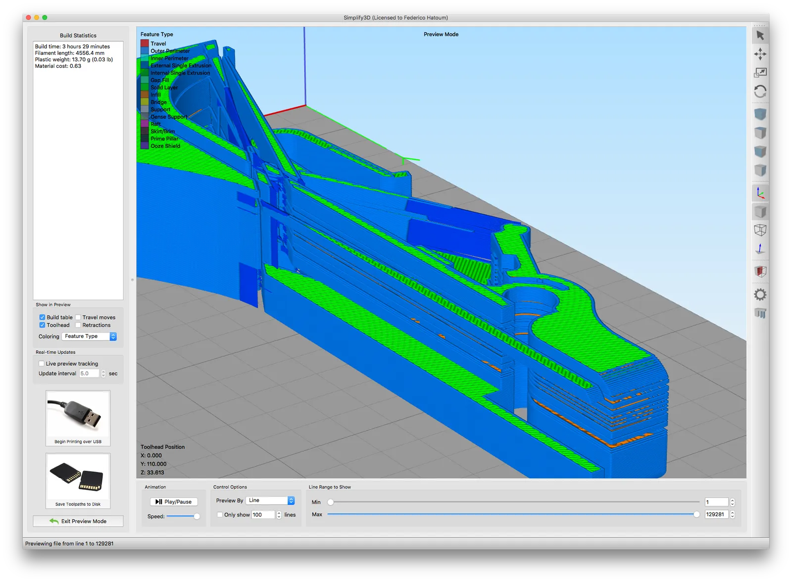
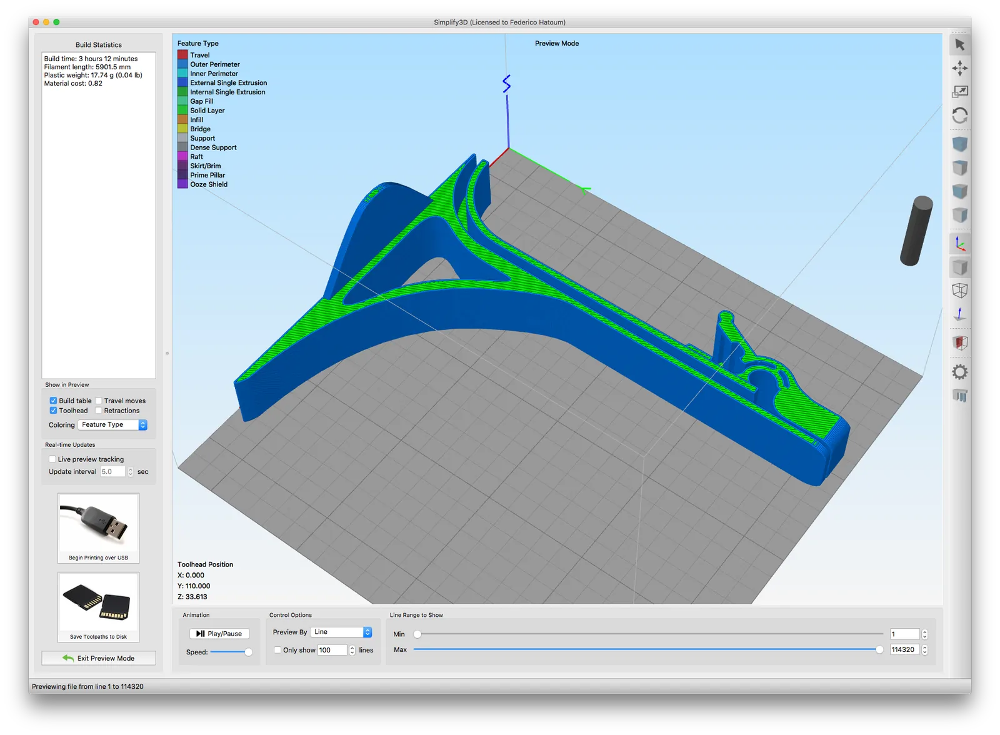

Don't use SketchUp for 3D-printed designs
TL;DR:
SketchUp is great in many ways, especially for creating architectural and construction models. However, while the objects that it creates look solid, many are not. That's not a problem if all you're doing is showing a client a design or creating an animation -- but it's a huge problem if your intention is to print your model in 3D.
Unfortunately, for all its design prowess, SketchUp produces faulty, unprintable STL files (the most common file type used by 3D printers). Some slicers (programs used to generate special 3D-printable gcode files) will not complain about SketchUp files, though many will, including Simplify3D.
Don't use SketchUp for designing objects you expect to 3D print. Better choices are the amazing Tinkercad (an online and free tool) or the hardcore Fusion 360 (free to many).
SketchUp is great (for some things):
I love SketchUp. I used it for many years to help me visualize DIY designs. It's easy to use and when it first came out (and Google eventually bought it), it was way ahead of its time. The way that it let you extrude surfaces and position objects in 3D space was really revolutionary.
And it's still great today, but only if you intend to display your designs on screens or on paper. Unfortunately, for all its design prowess, SketchUp produces faulty, unprintable STL files (the most common file type used by 3D printers).
The two images below illustrate the problem I'm talking about. Both images are screenshots from Simplify3D, an excellent and popular slicer. A slicer is a program that takes STL files and converts them into gcode files for a specific 3D printer. Gcode files contain instructions that tell a 3D printer how to print an object (coordinates, speeds, amount of material, etc).
Slicers also allow you to visualize the layers of a 3D print. The first image below is a screenshot from the layer visualization panel in Simplify3D, a fantastic, if pricey, slicing program. The visualization is of a 3D model which was edited in SketchUp to shorten one of its parts and then output as an STL file. You'll notice right away that something looks very wrong. There are holes in some surfaces, surfaces that jut out at strange angles and areas which should be voids are filled in. What you're seeing is an unprintable 3D model. SketchUp created 3D geometry that looks great on screen, but which can't be replicated as a physical object.
The second image is of the same original source model edited in Tinkercad (a really great and free online CAD tool), output as an STL file and then visualized in Simplify3D. Even if you're not an expert in CAD or 3D printing, it's easy to spot the differences between the good model and the bad model.









What's worse is that SketchUp doesn't give the user any clue that something is wrong, nor does it provide any tools to repair faulty geometry. In fact, most people who use SketchUp to design 3D objects are unaware that there are problems with the models they are exporting. They will swear to you that it worked fine in their slicer. That's because some slicers, such as Cura, hide geometry problems in an attempt, I think, to be more user friendly. The problem is that the practice doesn't guarantee a good print and further compounds users' confusion.
That's what happened to me. I used SketchUp to design footrests for my Herman Miller Mirra chair. When it came time to print my models on my Monoprice Select Mini v2 3D printer, I experienced all kinds of problems. Since I was new to 3D printers, I assumed that either the printer was faulty or I was using it incorrectly. Later, when I switched from Cura to Simplify3D for slicing my models, I noticed that the geometry of the footrests was broken. I'm amazed they printed at all.
Rather than spend time redesigning the footrests in Fusion 360 (a high-end and free to many CAD program), I ran my broken STL files through the free Netfabb Online Service which repairs 3D meshes. My models finally printed correctly, but if I want to continue refining my designs I have no choice but to painstakingly port the work over to another CAD program.
From that moment on I started learning Fusion 360 and use Tinkercad.